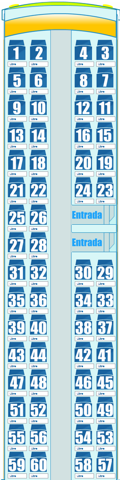

MD-5
Detalles de la Librería de modelado:
Toltal de asientos, Mínimo: 37, Máximo: 60, total de asientos soportados -> 15, 19, 23, 27, 31, 35, 39, 43, 47, 51, 55, 59, 63, 67.
Autor: ArielMax 2012.
Detalles de la Librería de modelado:
Toltal de asientos, Mínimo: 37, Máximo: 60, total de asientos soportados -> 15, 19, 23, 27, 31, 35, 39, 43, 47, 51, 55, 59, 63, 67.
Autor: ArielMax 2012.